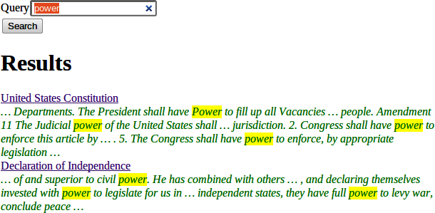

{% include JB/setup %}
{% raw %}
<div>
<div class="book" title="Searching"><div class="book"><div class="book"><div class="book"><h1 class="title2"><a id="I_sect14_d1e8431" class="calibre1"></a>Searching</h1></div></div></div><p class="calibre7"></p><p class="calibre7">Now that we’ve got the boring stuff out of the way, let’s jump into the actual
            searching. We’re going to need three pieces of information for displaying a result: the
            document ID it comes from, the title of that document, and the <em class="calibre4">excerpts</em>. Excerpts are the highlighted portions of the document which
            contain the search term.</p><div class="figure"><a id="searching-x-5" class="firstname"></a><div class="book"><div class="book"><a id="I_mediaobject4_d1e8443" class="firstname"></a></div></div><p class="title7">Figure 21-1. Search Result</p></div><p class="calibre7">So let’s start off by defining a Result data type:</p><a id="I_programlisting4_d1e8450" class="firstname"></a><pre class="programlistinghaskell"><code class="kr">data</code> <code class="kt">Result</code> <code class="ow">=</code> <code class="kt">Result</code>
    <code class="p">{</code> <code class="n">resultId</code> <code class="ow">::</code> <code class="kt">DocId</code>
    <code class="p">,</code> <code class="n">resultTitle</code> <code class="ow">::</code> <code class="kt">Text</code>
    <code class="p">,</code> <code class="n">resultExcerpt</code> <code class="ow">::</code> <code class="kt">Html</code>
    <code class="p">}</code>
</pre><p class="calibre7">Next we’ll look at the search handler:</p><a id="I_programlisting4_d1e8454" class="firstname"></a><pre class="programlistinghaskell"><code class="nf">getSearchR</code> <code class="ow">::</code> <code class="kt">Handler</code> <code class="kt">RepHtml</code>
<code class="nf">getSearchR</code> <code class="ow">=</code> <code class="kr">do</code>
    <code class="p">((</code><code class="n">formRes</code><code class="p">,</code> <code class="n">searchWidget</code><code class="p">),</code> <code class="kr">_</code><code class="p">)</code> <code class="ow">&lt;-</code> <code class="n">runFormGet</code> <code class="n">searchForm</code>
    <code class="n">searchResults</code> <code class="ow">&lt;-</code>
        <code class="kr">case</code> <code class="n">formRes</code> <code class="kr">of</code>
            <code class="kt">FormSuccess</code> <code class="n">qstring</code> <code class="ow">-&gt;</code> <code class="n">getResults</code> <code class="n">qstring</code>
            <code class="kr">_</code> <code class="ow">-&gt;</code> <code class="n">return</code> <code class="kt">[]</code>
    <code class="n">defaultLayout</code> <code class="o">$</code> <code class="kr">do</code>
        <code class="n">addLucius</code> <code class="p">[</code><code class="n">lucius</code><code class="o">|</code>
<code class="o">.</code><code class="n">excerpt</code> <code class="p">{</code>
    <code class="n">color</code><code class="kt">:</code> <code class="n">green</code><code class="p">;</code> <code class="n">font</code><code class="o">-</code><code class="n">style</code><code class="kt">:</code> <code class="n">italic</code>
<code class="p">}</code>
<code class="o">.</code><code class="n">match</code> <code class="p">{</code>
    <code class="n">background</code><code class="o">-</code><code class="n">color</code><code class="kt">:</code> <code class="n">yellow</code><code class="p">;</code>
<code class="p">}</code>
<code class="o">|</code><code class="p">]</code>
        <code class="p">[</code><code class="n">whamlet</code><code class="o">|</code>
<code class="o">&lt;</code><code class="n">form</code> <code class="n">method</code><code class="ow">=</code><code class="n">get</code> <code class="n">action</code><code class="o">=@</code><code class="p">{</code><code class="kt">SearchR</code><code class="p">}</code><code class="o">&gt;</code>
    <code class="o">^</code><code class="p">{</code><code class="n">searchWidget</code><code class="p">}</code>
    <code class="o">&lt;</code><code class="n">input</code> <code class="kr">type</code><code class="ow">=</code><code class="n">submit</code> <code class="n">value</code><code class="ow">=</code><code class="kt">Search</code><code class="o">&gt;</code>
<code class="o">$</code><code class="kr">if</code> <code class="n">not</code> <code class="o">$</code> <code class="n">null</code> <code class="n">searchResults</code>
    <code class="o">&lt;</code><code class="n">h1</code><code class="o">&gt;</code><code class="kt">Results</code>
    <code class="o">$</code><code class="n">forall</code> <code class="n">result</code> <code class="ow">&lt;-</code> <code class="n">searchResults</code>
        <code class="o">&lt;</code><code class="n">div</code> <code class="o">.</code><code class="n">result</code><code class="o">&gt;</code>
            <code class="o">&lt;</code><code class="n">a</code> <code class="n">href</code><code class="o">=@</code><code class="p">{</code><code class="kt">DocR</code> <code class="o">$</code> <code class="n">resultId</code> <code class="n">result</code><code class="p">}</code><code class="o">&gt;#</code><code class="p">{</code><code class="n">resultTitle</code> <code class="n">result</code><code class="p">}</code>
            <code class="o">&lt;</code><code class="n">div</code> <code class="o">.</code><code class="n">excerpt</code><code class="o">&gt;#</code><code class="p">{</code><code class="n">resultExcerpt</code> <code class="n">result</code><code class="p">}</code>
<code class="o">|</code><code class="p">]</code>
</pre><p class="calibre7">Nothing magical here, we’re just relying on the <code class="literal">searchForm</code> defined above, and the <code class="literal">getResults</code> function, which hasn’t been defined yet. This function just
            takes a search string, and returns a list of results. This is where we first interact
            with the Sphinx API. We’ll be using two functions: <code class="literal">query</code> will return a list of matches, and <code class="literal">buildExcerpts</code> will return the highlighted excerpts. Let’s first look at
                <code class="literal">query</code>:</p><a id="I_programlisting4_d1e8473" class="firstname"></a><pre class="programlistinghaskell"><code class="nf">getResults</code> <code class="ow">::</code> <code class="kt">Text</code> <code class="ow">-&gt;</code> <code class="kt">Handler</code> <code class="p">[</code><code class="kt">Result</code><code class="p">]</code>
<code class="nf">getResults</code> <code class="n">qstring</code> <code class="ow">=</code> <code class="kr">do</code>
    <code class="n">sphinxRes'</code> <code class="ow">&lt;-</code> <code class="n">liftIO</code> <code class="o">$</code> <code class="kt">S</code><code class="o">.</code><code class="n">query</code> <code class="n">config</code> <code class="s">"searcher"</code> <code class="p">(</code><code class="n">unpack</code> <code class="n">qstring</code><code class="p">)</code>
    <code class="kr">case</code> <code class="n">sphinxRes'</code> <code class="kr">of</code>
        <code class="kt">ST</code><code class="o">.</code><code class="kt">Ok</code> <code class="n">sphinxRes</code> <code class="ow">-&gt;</code> <code class="kr">do</code>
            <code class="kr">let</code> <code class="n">docids</code> <code class="ow">=</code> <code class="n">map</code> <code class="p">(</code><code class="kt">Key</code> <code class="o">.</code> <code class="kt">PersistInt64</code> <code class="o">.</code> <code class="kt">ST</code><code class="o">.</code><code class="n">documentId</code><code class="p">)</code> <code class="o">$</code> <code class="kt">ST</code><code class="o">.</code><code class="n">matches</code> <code class="n">sphinxRes</code>
            <code class="n">fmap</code> <code class="n">catMaybes</code> <code class="o">$</code> <code class="n">runDB</code> <code class="o">$</code> <code class="n">forM</code> <code class="n">docids</code> <code class="o">$</code> <code class="nf">\</code><code class="n">docid</code> <code class="ow">-&gt;</code> <code class="kr">do</code>
                <code class="n">mdoc</code> <code class="ow">&lt;-</code> <code class="n">get</code> <code class="n">docid</code>
                <code class="kr">case</code> <code class="n">mdoc</code> <code class="kr">of</code>
                    <code class="kt">Nothing</code> <code class="ow">-&gt;</code> <code class="n">return</code> <code class="kt">Nothing</code>
                    <code class="kt">Just</code> <code class="n">doc</code> <code class="ow">-&gt;</code> <code class="n">liftIO</code> <code class="o">$</code> <code class="kt">Just</code> <code class="o">&lt;$&gt;</code> <code class="n">getResult</code> <code class="n">docid</code> <code class="n">doc</code> <code class="n">qstring</code>
        <code class="kr">_</code> <code class="ow">-&gt;</code> <code class="ne">error</code> <code class="o">$</code> <code class="n">show</code> <code class="n">sphinxRes'</code>
  <code class="kr">where</code>
    <code class="n">config</code> <code class="ow">=</code> <code class="kt">S</code><code class="o">.</code><code class="n">defaultConfig</code>
        <code class="p">{</code> <code class="kt">S</code><code class="o">.</code><code class="n">port</code> <code class="ow">=</code> <code class="mi">9312</code>
        <code class="p">,</code> <code class="kt">S</code><code class="o">.</code><code class="n">mode</code> <code class="ow">=</code> <code class="kt">ST</code><code class="o">.</code><code class="kt">Any</code>
        <code class="p">}</code>
</pre><p class="calibre7"><code class="literal">query</code> takes three parameters: the configuration
            options, the index to search against (searcher in this case), and the search string. It
            returns a list of document IDs that contain the search string. The tricky bit here is
            that those documents are returned as <code class="literal">Int64</code> values,
            whereas we need <code class="literal">DocId</code>s. We’re taking advantage of the
            fact that the SQL Persistent backends use a <code class="literal">PersistInt64</code> constructor for their IDs, and simply wrap up the values
            appropriately.</p><div class="tip" title="Note"><h3 class="title3">Note</h3><p class="calibre7">If you’re dealing with a backend that has non-numeric IDs, like MongoDB,
            you’ll need to work out something a bit more clever than this.</p></div><p class="calibre7">We then loop over the resulting IDs to get a <code class="literal">[Maybe
                Result]</code> value, and use <code class="literal">catMaybes</code> to turn it into
            a <code class="literal">[Result]</code>. In the where clause, we define our local
            settings, which override the default port and set up the search to work when <span class="firstname"><em class="calibre4">any</em></span> term matches the document.</p><p class="calibre7">Let’s finally look at the <code class="literal">getResult</code> function:</p><a id="I_programlisting4_d1e8511" class="firstname"></a><pre class="programlistinghaskell"><code class="nf">getResult</code> <code class="ow">::</code> <code class="kt">DocId</code> <code class="ow">-&gt;</code> <code class="kt">Doc</code> <code class="ow">-&gt;</code> <code class="kt">Text</code> <code class="ow">-&gt;</code> <code class="kt">IO</code> <code class="kt">Result</code>
<code class="nf">getResult</code> <code class="n">docid</code> <code class="n">doc</code> <code class="n">qstring</code> <code class="ow">=</code> <code class="kr">do</code>
    <code class="n">excerpt'</code> <code class="ow">&lt;-</code> <code class="kt">S</code><code class="o">.</code><code class="n">buildExcerpts</code>
        <code class="n">excerptConfig</code>
        <code class="p">[</code><code class="kt">T</code><code class="o">.</code><code class="n">unpack</code> <code class="o">$</code> <code class="n">escape</code> <code class="o">$</code> <code class="n">docContent</code> <code class="n">doc</code><code class="p">]</code>
        <code class="s">"searcher"</code>
        <code class="p">(</code><code class="n">unpack</code> <code class="n">qstring</code><code class="p">)</code>
    <code class="kr">let</code> <code class="n">excerpt</code> <code class="ow">=</code>
            <code class="kr">case</code> <code class="n">excerpt'</code> <code class="kr">of</code>
                <code class="kt">ST</code><code class="o">.</code><code class="kt">Ok</code> <code class="n">bss</code> <code class="ow">-&gt;</code> <code class="n">preEscapedLazyText</code> <code class="o">$</code> <code class="n">decodeUtf8With</code> <code class="n">ignore</code> <code class="o">$</code> <code class="kt">L</code><code class="o">.</code><code class="n">concat</code> <code class="n">bss</code>
                <code class="kr">_</code> <code class="ow">-&gt;</code> <code class="s">""</code>
    <code class="n">return</code> <code class="kt">Result</code>
        <code class="p">{</code> <code class="n">resultId</code> <code class="ow">=</code> <code class="n">docid</code>
        <code class="p">,</code> <code class="n">resultTitle</code> <code class="ow">=</code> <code class="n">docTitle</code> <code class="n">doc</code>
        <code class="p">,</code> <code class="n">resultExcerpt</code> <code class="ow">=</code> <code class="n">excerpt</code>
        <code class="p">}</code>
  <code class="kr">where</code>
    <code class="n">excerptConfig</code> <code class="ow">=</code> <code class="kt">E</code><code class="o">.</code><code class="n">altConfig</code> <code class="p">{</code> <code class="kt">E</code><code class="o">.</code><code class="n">port</code> <code class="ow">=</code> <code class="mi">9312</code> <code class="p">}</code>

<code class="nf">escape</code> <code class="ow">::</code> <code class="kt">Textarea</code> <code class="ow">-&gt;</code> <code class="kt">Text</code>
<code class="nf">escape</code> <code class="ow">=</code>
    <code class="kt">T</code><code class="o">.</code><code class="n">concatMap</code> <code class="n">escapeChar</code> <code class="o">.</code> <code class="n">unTextarea</code>
  <code class="kr">where</code>
    <code class="n">escapeChar</code> <code class="s">'&lt;'</code> <code class="ow">=</code> <code class="s">"&amp;lt;"</code>
    <code class="n">escapeChar</code> <code class="s">'&gt;'</code> <code class="ow">=</code> <code class="s">"&amp;gt;"</code>
    <code class="n">escapeChar</code> <code class="s">'&amp;'</code> <code class="ow">=</code> <code class="s">"&amp;amp;"</code>
    <code class="n">escapeChar</code> <code class="n">c</code>   <code class="ow">=</code> <code class="kt">T</code><code class="o">.</code><code class="n">singleton</code> <code class="n">c</code>
</pre><p class="calibre7"><code class="literal">buildExcerpts</code> takes four parameters: the configuration
            options, the textual contents of the document, the search index, and the search term.
            The interesting bit is that we entity escape the text content. Sphinx won’t
            automatically escape these for us, so we must do it explicitly.</p><p class="calibre7">Similarly, the result from Sphinx is a list of lazy ByteStrings. But of course, we’d
            rather have
            HTML.
            So we concat that list into a single lazy ByteString, decode it to a lazy text (ignoring
            invalid UTF-8 character sequences), and use preEscapedLazyText to make sure that the
            tags inserted for matches are not escaped. A sample of this HTML is:</p><a id="I_programlisting4_d1e8523" class="firstname"></a><pre class="programlistinghaskell">&amp;#8230; Departments.  The President shall have &lt;span class='match'&gt;Power&lt;/span&gt; to fill up all Vacancies
&amp;#8230;  people. Amendment 11 The Judicial &lt;span class='match'&gt;power&lt;/span&gt; of the United States shall
&amp;#8230; jurisdiction. 2. Congress shall have &lt;span class='match'&gt;power&lt;/span&gt; to enforce this article by
&amp;#8230; 5. The Congress shall have &lt;span class='match'&gt;power&lt;/span&gt; to enforce, by appropriate legislation
&amp;#8230;</pre></div></div>

{% endraw %}

